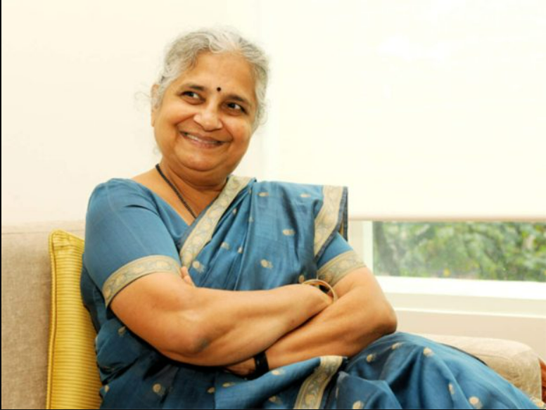

|  | Sudha MurthyAn Indian Educator. |
Sudha Murty (née Kulkarni; born 19 August 1951) is an Indian educator, author and philanthropist who is chairperson of the Infosys Foundation. She is married to the co-founder of Infosys, N. R. Narayana Murthy. Murty was awarded the Padma Shri, the fourth highest civilian award in India, for social work by the Government of India in 2006.Sudha Murty began her professional career in computer science and engineering. She is the chairperson of the Infosys Foundation and a member of the public health care initiatives of the Gates Foundation.She has founded several orphanages, participated in rural development efforts, supported the movement to provide all Karnataka government schools with computer and library facilities, and established Murty Classical Library of India at Harvard University.Murty is best known for her philanthropy and her contribution to literature in Kannada and English. Dollar Bahu (lit. 'Dollar Daughter-in-Law'), a novel originally authored by her in Kannada and later translated into English as Dollar Bahu, was adapted as a televised dramatic series by Zee TV in 2001.Runa (lit. 'Debt'), a story by Sudha Murthy was adapted as a Marathi film, Pitruroon by director Nitish Bhardwaj. Sudha Murthy has also acted in the film as well as a Kannada film Prarthana.
| Kannada | English |
|---|---|
| Dollar Sose | The Mother I Never Knew |
| Mahashewta | Three Thousand Stitches |
| Tumla | The Magic of the Lost Temple |
| Paridhi | Wise and Otherwise |
| Astitva | The Bird with the Golden Wings |
“Vision without action is merely a dream; action without vision is merely passing time; but vision and action together can change the world.”